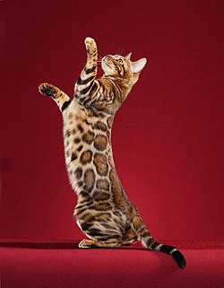

GATO BEGALI

El bengalí es una raza de gato doméstico desarrollada para parecerse
a los felinos salvajes exóticos tales como son los leopardos, ocelotes, margais, etc. El gato bengala, fue un resultado del cruce entre un gato doméstico (Felis silvestris catus)
y una hembra gato leopardo (Prionailurus bengalensis). Las primeras tres generaciones que parten teniendo al Felis Bengalensis como uno de los progenitories, se llaman ejemplares
fundacionales y son los ejemplares híbridos de este cruce, que fueron utilizando para desarrollar esta raza cruzándolos con gatos domésticos de rasgos moteados, como por ejemplo,
el Mau Egipcio, con la finalidad de obtener un gato doméstico con el manto parecido a un leopardo . A partir de la cuarta generación obtenemos ya a un gato de la raza bengalí
totalmente fértil y dócil.
En la actualidad no es necesario volver a cruzar un gato de raza
bengalí con un Felis Bengalensis, porque la raza bengalí ya ha tenido lugar, y la cría selectiva de los mejores bengalíes es suficiente, para perpetuar y mejorar el manto de esta
preciosa raza doméstica.
Es de origen estadounidense, donde en 1963 se cruzó, con intervención
humana, un gato doméstico y una gata bengala. Su nombre es el derivado del nombre científico de la madre (Prionailurus bengalensis).